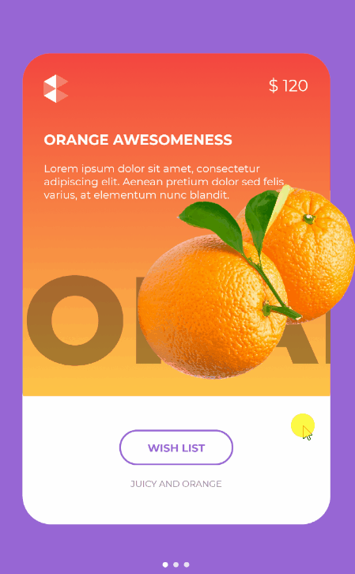

<!DOCTYPE html>
<html lang="en">
  <head>
    <meta charset="utf-8" />
    <meta name="viewport" content="width=device-width, initial-scale=1.0, maximum-scale=1.0, user-scalable=no" />

    <title>reveal-md</title>
    <link rel="stylesheet" href="./css/reveal.css" />
    <link rel="stylesheet" href="./css/theme/night.css" id="theme" />
    <link rel="stylesheet" href="./css/highlight/atom-one-dark.css" />
    <link rel="stylesheet" href="./css/print/paper.css" type="text/css" media="print" />
    <link rel="stylesheet" href="./_assets/.\free-yourself.css" />

    <script>
      document.write('<script src="http://' + (location.host || 'localhost').split(':')[0] + ':35729/livereload.js?snipver=1"></' + 'script>');
    </script>
  </head>
  <body>
    <div class="reveal">
      <div class="slides"><section  data-markdown><script type="text/template"><video width="800" height="600" poster="free_yourself_banner.png" controls>
  <source src="free_yourself_from_isbusy_equals_true_v5.mp4" type="video/mp4">
</video>

<aside class="notes"><p>Hi I&#39;m Jean-Marie and I clearly need way too much attention.</p>
</aside></script></section><section ><section data-markdown><script type="text/template">
## [Sharpnado](https://www.sharpnado.com/)

Cause the world is a cruel place.

Look at those sweet UI created by the community:

<aside class="notes"><p>it&#39;s true, now look at that.</p>
</aside></script></section><section data-markdown><script type="text/template">
## What you won't code


<aside class="notes"><p>Javier Suárez. Wow isn&#39;t it beautiful would you want to code this? I bet you do.</p>
</aside></script></section><section data-markdown><script type="text/template">
## This


<aside class="notes"><p>Kym Phillpotts. Nice animations woooow.</p>
</aside></script></section><section data-markdown><script type="text/template">
## Or this



<aside class="notes"><p>Steven Thewissen. Sweet. You&#39;re craving to code this uh? right? Well your designer has other plans for you kiddo!</p>
</aside></script></section><section data-markdown><script type="text/template">
## But this!


<aside class="notes"><p>eat this!</p>
</aside></script></section><section data-markdown><script type="text/template">
## [Sharpnado](https://www.sharpnado.com/)

Pragmatic components for the sad real world:

* HorizontalListView
* Tabs
* SkiaSharp curves and gradient overlays on Google Maps
* Stupid monty python based jokes

<aside class="notes"><p>now you could ask yourself &quot;what the hell am I doing here?&quot; ok.</p>
</aside></script></section><section data-markdown><script type="text/template">
## Consulting services

* Create a solution architecture for a new project
* Lead your team on concrete issues
* Create Xamarin.Forms application from scratch (design included :)
* Help with performance issues or maintainability
</script></section></section><section  data-markdown><script type="text/template">
## What is it about

* Composition vs Inheritance
* Async loading practices
* View model loading states
* Task as a loading state component

<aside class="notes"><p>enough with the silliness.</p>
</aside></script></section><section ><section data-markdown><script type="text/template">
<!-- .slide: class="stretch" -->

## Our silly people view

<div class="container">
    <div class="left">
        
    </div>
    <div class="right">
<pre><code class="xml">&lt;Grid&gt;
    &lt;GridView x:Name=&quot;OurResultView&quot;
        ItemsSource="{Binding SillyDudes}" /&gt;
&lt;/Grid&gt;
</code></pre>
    </div>
</div>
</script></section><section data-markdown><script type="text/template">
[//]: # (<!-- .slide: class="stretch" -->)

## Silly people view model

```csharp
public ObservableCollection<SillyDudeVmo> SillyDudes { get; private set; }

public async void Initialize()
{
    await LoadSillyPeopleAsync();
}

public Task LoadSillyPeopleAsync()
{
    SillyDudes = new ObservableCollection<SillyDudeVmo>(
        (await _sillyDudeService.GetSillyPeople())
            .Select(dude => new SillyDudeVmo(dude)));
    RaisePropertyChanged(nameof(SillyDudes));
}
```

<aside class="notes"><p>So, here is our shameless initialization code (spoiler alert: this is wrong).</p>
</aside></script></section><section data-markdown><script type="text/template">
## Loading

<div class="container">
    <div class="left">
        
    </div>
    <div class="right">
<pre><code class="xml">&lt;Grid&gt;
    &lt;GridView x:Name=&quot;OurResultView&quot; 
        ItemsSource="{Binding SillyDudes}"
        IsVisible="{Binding IsBusy, 
            Converter={StaticResource 
                BoolInverterConverter}}" /&gt;
    &lt;ActivityIndicator IsRunning="{Binding IsBusy}" /&gt;
&lt;/Grid&gt;
</code></pre>
    </div>
</div>
</script></section><section data-markdown><script type="text/template">
## Silly people view model

```csharp
public async void Initialize()
{    
    IsBusy = true;
    try
    {
        await LoadSillyPeopleAsync();
    }
    finally
    {
        IsBusy = false;
    }
}

```

<aside class="notes"><p>This is a little better, but wait, I want to give a UI feedback to the user. Now if a exception occurs here, it will silently fail and you end up with a dirty UI state: no error but no success.</p>
</aside></script></section><section data-markdown><script type="text/template">
## Error handling

<!-- .slide: id="naive-error" -->

<div class="container">
    <div class="left">
        
    </div>
    <div class="right">
<pre><code class="xml">&lt;Grid&gt;
    &lt;GridView x:Name=&quot;OurResultView&quot; 
        ItemsSource="{Binding SillyDudes}"
        IsVisible="{Binding IsBusy, 
            Converter={StaticResource 
                BoolInverterConverter}}" /&gt;
    &lt;ActivityIndicator IsRunning="{Binding IsBusy}" /&gt;
    &lt;ErrorView IsVisible="{Binding HasErrors}"
        Text="{Binding ErrorMessage}" /&gt;
&lt;/Grid&gt;
</code></pre>
    </div>
</div>
</script></section><section data-markdown><script type="text/template">
<!-- .slide: id="naive-error-vm" -->

```csharp
public ObservableCollection<SillyDudeVmo> SillyDudes { get; private set; }

public async void Initialize()
{
    IsBusy = true;
    HasErrors = false;
    try    
    {            
        await LoadSillyPeopleAsync();
    }
    catch (Exception exception)
    {
        HasErrors = true;
        ErrorMessage = exception.ToErrorMessage();
    }
    finally
    {
        IsBusy = false;
    }
}

public Task LoadSillyPeopleAsync()
{ ... }
```
</script></section></section><section ><section data-markdown><script type="text/template">
## Code reuse

**EASY** Put it in abstract `ViewModelBase`!
 
But... all VM doesn't require async loading...

**EASY** Create another hierarchy level!!
</script></section><section data-markdown><script type="text/template">

```csharp
public abstract class ViewModelLoadable : ViewModelBase
{
    public async void Initialize()
    {
        IsBusy = true;
        HasErrors = false;
        try    
        {            
            await InitializeAsync();
        }
        catch (Exception exception)
        {
            HasErrors = true;
            ErrorMessage = exception.ToErrorMessage();
        }
        finally
        {
            IsBusy = false;
        }
    }

    protected abstract Task InitializeAsync();
}
```
</script></section><section data-markdown><script type="text/template">
## And so on...

Mmmh but wait... The way we are dealing with lists is different than with simple item... 

```
ViewModelBase
    | 
    |__ViewModelLoadable
            |
            |__ViewModelLoadableItem


ViewModelBase
    | 
    |__ViewModelLoadable
            |
            |__ViewModelLoadableList
```


<aside class="notes"><p>Now you&#39;re in the inheritance maze, you will think you reuse all your code with inheritance, and you will go crazy... You can think I exaggerating a bit. So now I&#39;m gonna show you a real world example I stumbled upon.</p>
</aside></script></section><section data-markdown><script type="text/template">
## Real world example

```
MvxViewModel
    | 
    |__AbstractViewModel
            | 
            |__ObjectViewModel<T>
                    | 
                    |__AdvertisementBaseViewModel<T>
                            | 
                            |__AdvertisementResultViewModel
                                    | 
                                    |__AdvertisementFavoriteViewModel
```

<aside class="notes"><p>issues induced: debugging is really hard. Your VM states and properties are</p>
</aside></script></section><section data-markdown><script type="text/template">
# Issues

* Debugging is really hard
* Your VM states and properties are scattered all around: you are losing control
* Modifying mother classes will possibly break all the children classes
* What is exactly the responsability of each of these classes?
</script></section><section data-markdown><script type="text/template">
## STOP IT

Ok stop it, stop that nonsense.

Just use Composition over Inheritance.
</script></section></section><section ><section data-markdown><script type="text/template">
## Composition vs inheritance

Make a component out of:

```csharp
IsBusy = true;
HasErrors = false;
try    
{            
    await InitializeAsync();
}
catch (Exception exception)
{
    HasErrors = true;
    ErrorMessage = exception.ToErrorMessage();
}
finally
{
    IsBusy = false;
}
```
</script></section><section data-markdown><script type="text/template">
## Create a component

Start with SRP (single responsibility principle)

* What is the role of the View Model?
* What is the role of the component?
</script></section><section data-markdown><script type="text/template">
## Loading component 

1. Load an async method
2. Get the state of the loading (`success/fail/not_completed`)
3. Can return a result (item or list whatever)
4. `NotifyPropertyChanged` for state-oriented properties

1, 2 & 3 = [C# `Task`](https://docs.microsoft.com/en-US/dotnet/api/system.threading.tasks.task?view=netstandard-2.1#properties)

<aside class="notes"><p>since async/await people tend to underestimate the power of the Task object. But it has all the informations you need to manage your VM states.</p>
</aside></script></section></section><section ><section data-markdown><script type="text/template">
## NotifyTask

We need a wrapper around the `Task` object implementing `INotifyPropertyChanged`: 

[`NotifyTask`](https://github.com/StephenCleary/Mvvm.Async/blob/master/src/Nito.Mvvm.Async/NotifyTask.cs)

This component has been created by [Stephen Cleary years ago](https://msdn.microsoft.com/en-us/magazine/dn605875.aspx)
</script></section><section data-markdown><script type="text/template">
## Our views

<table>
  <tr>
    <th></th>
    <th></th>
    <th></th>
  </tr>
</table>
</script></section><section data-markdown><script type="text/template">
```csharp
public NotifyTask<ObservableCollection<SillyDudeVmo>> SillyDudesTask 
{ 
    get; 
    private set; 
}

public void Initialize()
{
    SillyDudesTask = NotifyTask<ObservableCollection<SillyDudeVmo>>
        .Create(LoadSillyPeopleAsync());
    RaisePropertyChanged(SillyDudesTask);
}

public Task LoadSillyPeopleAsync()
{
    return new ObservableCollection<SillyDudeVmo>(
        (await _sillyDudeService.GetSillyPeople())
            .Select(dude => new SillyDudeVmo(dude)));
}
```

[Remember](#/naive-error-vm)

<aside class="notes"><p>async void is gone!</p>
</aside></script></section><section data-markdown><script type="text/template">
## View side

<!-- .slide: id="notifytask-view" -->

<pre><code class="xml">&lt;Grid BindingContext="{Binding SillyDudesTask}"&gt;
    &lt;GridView x:Name=&quot;OurResultView&quot; 
        ItemsSource="{Binding Result}"
        IsVisible="{Binding IsSuccessfullyCompleted}" /&gt;
    &lt;ActivityIndicator IsRunning="{Binding IsNotCompleted}" /&gt;
    &lt;ErrorView IsVisible="{Binding IsFaulted}"
        Text="{Binding InnerException,
            Converter={StaticResource 
                ExceptionToErrorMessage}}" /&gt;
&lt;/Grid&gt;
</code></pre>

[Remember](#/naive-error)
</script></section><section data-markdown><script type="text/template">
## But what do we want really?

* Something more view model oriented
* A component handling all common loading states
  </script></section></section><section ><section data-markdown><script type="text/template">
## [View Model Loader](https://github.com/roubachof/Sharpnado.Presentation.Forms/blob/master/Sharpnado.Presentation.Forms/ViewModels/ViewModelLoader.cs)

A specialization of `NotifyTask`, handles:

1. Loading
2. Success
3. Empty state
4. Error (and all sub exceptions with a ErrorHandler: `Func<Exception, string>`)
5. Refresh

<aside class="notes"><p>So instead of giving to a parent view model the responsibility to handle all these for us, we just create a reusable component to do so, achieving a clearer architecture. Naming is super important.</p>
</aside></script></section><section data-markdown><script type="text/template">
## Special raisable properties


```csharp
public bool ShowLoader

public bool ShowRefresher

public bool ShowResult

public bool ShowError

public bool ShowEmptyState

public bool ShowErrorNotification

public string ErrorMessage

public Exception Error

public string EmptyStateMessage
```

<aside class="notes"><p>show ViewModelLoader code</p>
</aside></script></section><section data-markdown><script type="text/template">
```csharp
public ViewModelLoader<ObservableCollection<SillyDudeVmo>> 
    SillyPeopleLoader { get; }

public void Initialize()
{
    SillyPeopleLoader.Load(LoadSillyPeopleAsync);
}

public Task LoadSillyPeopleAsync()
{
    return new ObservableCollection<SillyDudeVmo>(
        (await _sillyDudeService.GetSillyPeople())
            .Select(dude => new SillyDudeVmo(dude)));
}
```

<aside class="notes"><p>The viewmodelloader is instantiated in the VM constructor. So it doesn&#39;t have to be raised. From the vm point of view it is very close to the NotifyTask, but it will greatly simplify the way we give UI feedback to the user. We will not use it directly to the view, but we&#39;ll bind it to a custom view...</p>
</aside></script></section></section><section ><section data-markdown><script type="text/template">
## [The Task Loader View](https://github.com/roubachof/Sharpnado.Presentation.Forms/blob/master/Sharpnado.Presentation.Forms/CustomViews/TaskLoaderView.xaml)

A container switching between views matching the view model state.

It is the natural brother of the `ViewModelLoader`: you bind a `ViewModelLoader` to a `TaskLoaderView`.


<aside class="notes"><p>show TaskLoaderView XAML code, then code-behind</p>
</aside></script></section><section data-markdown><script type="text/template">
## Our example

```xml
<customViews:TaskLoaderView Style="{StaticResource SillyTaskLoader}"
                            ViewModelLoader="{Binding SillyPeopleLoader}">
    <GridView x:Name="OurResultView"; 
        ItemsSource="{Binding SillyPeopleLoader.Result}">
</customViews:TaskLoaderView>
```

[Remember](#/notifytask-view)
</script></section><section data-markdown><script type="text/template">
## Stylable

```xml
<Style x:Key="SillyTaskLoader" TargetType="customViews:TaskLoaderView">
    <Setter Property="AccentColor" 
        Value="{StaticResource Accent}" />
    <Setter Property="FontFamily" 
        Value="{StaticResource FontItalic}" />
    <Setter Property="EmptyStateImageUrl" 
        Value="dougal.png" />
    <Setter Property="RetryButtonText" 
        Value="{localization:Translate ErrorButton_Retry}" />
    <Setter Property="TextColor" 
        Value="{StaticResource TextPrimaryColor}" />
    <Setter Property="ErrorImageConverter" 
        Value="{StaticResource ExceptionToImageSourceConverter}" />
</Style>
```
</script></section></section><section  data-markdown><script type="text/template">
# Demo

* [SillyPeopleVm.cs](https://github.com/roubachof/Xamarin-Forms-Practices/blob/free-yourself/SillyCompany.Mobile.Practices/Presentation/ViewModels/SillyPeopleVm.cs)
* [SillyPeoplePage.xaml](https://github.com/roubachof/Xamarin-Forms-Practices/blob/free-yourself/SillyCompany.Mobile.Practices/Presentation/Views/SillyPeoplePage.xaml)

<aside class="notes"><p>don&#39;t forget: ErrorHandler and ExceptionToImageSourceConverter</p>
</aside></script></section><section  data-markdown><script type="text/template">
## Composition

* You use a component when you need it
* You can compose components
* It makes you think a lot more about SRP
</script></section><section  data-markdown><script type="text/template">
## What's next?

* Refactoring of `NotifyTask` and `ViewModelLoader`
* Improved and more customizable `TaskLoaderView`
* Secret project

https://www.sharpnado.com/taskloaderview-async-init-made-easy/
https://www.sharpnado.com/paginator-platform-independent/
</script></section><section  data-markdown><script type="text/template">
#  Thanks! Questions?

* @Piskariov
* jm@sharpnado.com
* www.sharpnado.com
* github.com/roubachof</script></section></div>
    </div>

    <script src="./js/reveal.js"></script>

    <script>
      function extend() {
        var target = {};
        for (var i = 0; i < arguments.length; i++) {
          var source = arguments[i];
          for (var key in source) {
            if (source.hasOwnProperty(key)) {
              target[key] = source[key];
            }
          }
        }
        return target;
      }

      // Optional libraries used to extend on reveal.js
      var deps = [
        { src: './plugin/markdown/marked.js', condition: function() { return !!document.querySelector('[data-markdown]'); } },
        { src: './plugin/markdown/markdown.js', condition: function() { return !!document.querySelector('[data-markdown]'); } },
        { src: './plugin/highlight/highlight.js', async: true, callback: function() { hljs.initHighlightingOnLoad(); } },
        { src: './plugin/zoom-js/zoom.js', async: true },
        { src: './plugin/notes/notes.js', async: true },
        { src: './plugin/math/math.js', async: true }
      ];

      // default options to init reveal.js
      var defaultOptions = {
        controls: true,
        progress: true,
        history: true,
        center: true,
        transition: 'default', // none/fade/slide/convex/concave/zoom
        dependencies: deps
      };

      // options from URL query string
      var queryOptions = Reveal.getQueryHash() || {};

      var options = extend(defaultOptions, {"pdfMaxPagesPerSlide":1}, queryOptions);
    </script>


    <script>
      Reveal.initialize(options);
    </script>
  </body>
</html>
